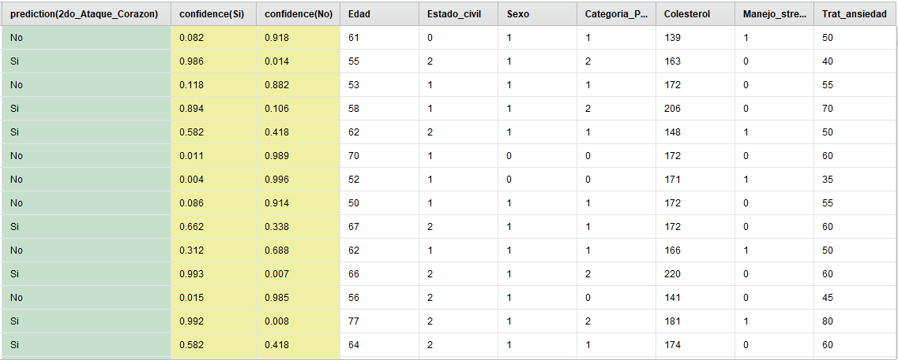

Predicción de segundo ataque cardíaco
Descripción
Este proyecto consiste en generar un modelo de IA que sea capaz de predecir si alguien podría recibir un ataque cardíaco en el futuro, o más concretamente, un segundo ataque cardíaco, dado que se planea implementar para ser utilizado por un cardiólogo, el cual, con la ayuda del modelo, puede decidir distintos tratamientos para sus pacientes.
Para esto tenemos dos datasets:
- Un dataset de entrenamiento, donde hay personas que ya tuvieron un ataque cardíaco e indican si tuvieron otro o no.
- Un dataset de evaluación, donde hay personas que solo tuvieron un ataque cardíaco, y se intenta predecir si tendrá otro.
Estos datasets tienen los siguientes atributos:
RapidMiner
Para realizar este proyecto, se utilizó RapidMiner, una aplicación para desarrollo de modelos de IA de uso industrial. El resultado es el siguiente:
Proceso de RapidMiner:

Modelo de regresión logística:

Dataset de evaluación con las predicciones:

Dentro de las predicciones, se puede notar que 350 de ellas son clasificadas como positivas, y 340
son negativas. Sin embargo, cabe aclarar que el modelo calcula una probabilidad de que sea positivo
o negativo.
Para poner un ejemplo, veamos este ejemplo del dataset de evaluación:

Como se puede ver, el modelo categoriza este ejemplo como negativo, o sea, que lo más probable es que no reciba un ataque al corazón. Sin embargo, viendo el atributo confidence(No), se puede notar que reconoce una probabilidad del 50.3% de que sea negativo. Con esta probabilidad, lo mejor es asumir que podría tener un segundo ataque al corazón, y tomar medidas con ello en cuenta.
El modelo, en sí, calcula las probabilidades de que un paciente reciba un ataque al corazón o no. Luego, si la probabilidad de que ocurra es mayor o igual que un valor conocido como nivel de confianza (que suele ser 0,5), se considera como un caso positivo. El nivel de confianza se puede cambiar para ajustarse al contexto.
Para determinar la performance del modelo, conviene generar un nuevo par de datasets de entrenamiento y evaluación, a partir del dataset de entrenamiento original, de la siguiente forma: